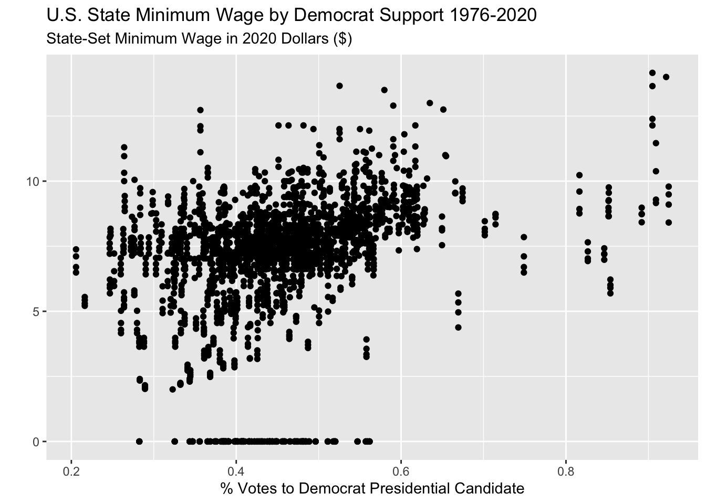
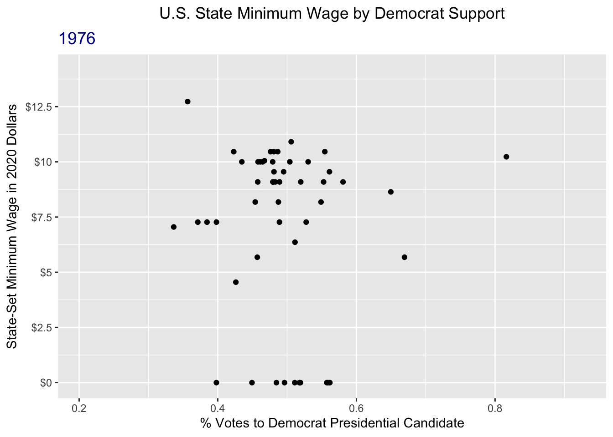

library(palmerpenguins)
data(penguins)
penguins <- penguins |>
filter(!is.na(bill_length_mm),
!is.na(bill_depth_mm))10 Model Validation + Graphics Extensions
Reading: 12 minute(s) at 200 WPM
Videos: NA
Objectives
- Be introduced to rationale behind model validation
- Implement train/test or cross-validation model validation in R
- Create animated graphics in R
- Create basic map (geographic) graphics in R
10.1 Model Validation
This section is adapted from Chapter 10: Model Validation in Introduction to Statistical Modeling by Michael R. Hughes and Thomas J. Fisher (Hughes and Fisher 2022).
Start by reading section 10.1 from Introduction to Statistical Modeling.
When developing a model and determining how well the model performs, we want to consider how well the model will perform with other or new data, not just the data that the model was fit with. If a model is overfit, then the prediction error of the model will be smaller on the data it was fit with than a different set of data. Thus, measures of model fit just calculated from the data the model was fit with will overestimate how good the model is in other settings.
The general approach to get around this issue is to partition the data that you have and use part(s) of it to fit the model and the other part(s) to validate the model.
10.1.1 Test / Train Split
The most basic partition used is often called a train / test split.
As (Hughes and Fisher 2022) explain this very well, you split the data into two partitions or subsets:
- A training set on which we build our model. It is called a training set because we use this data partition to train the model for prediction.
- A test set (or validation set) which is used to test our model by estimating the prediction error resulting from predicting new observations.
Commonly used split proportions in practice are 80% for training data and 20% for test data, though this can be altered.
Let’s look at using a train/test split for model validation with our model from the last chapter.
First we need to split the data! I will use the 80/20 suggested split. We can randomly sample 20% of the penguins for the test set and then use the rest for the training set.
set.seed(145)
# randomly sample 20% of indices
test.idx <- sample(1:nrow(penguins),
size = floor(nrow(penguins)*.2))
# subset data for training set (80% of penguins)
train_dat <- penguins |>
filter(!row_number() %in% test.idx)
# subset data for test set (20% of penguins)
test_dat <- penguins |>
filter(row_number() %in% test.idx)After this split, the training data has 274 observations and the test data has 68 observations.
Now, we will fit the model with the training data only.
train_model <- lm(bill_length_mm ~ bill_depth_mm,
data = train_dat
)
summary(train_model)
Call:
lm(formula = bill_length_mm ~ bill_depth_mm, data = train_dat)
Residuals:
Min 1Q Median 3Q Max
-12.8517 -3.8587 -0.3458 3.5154 15.6542
Coefficients:
Estimate Std. Error t value Pr(>|t|)
(Intercept) 55.3465 2.7714 19.971 < 2e-16 ***
bill_depth_mm -0.6706 0.1607 -4.174 4.03e-05 ***
---
Signif. codes: 0 '***' 0.001 '**' 0.01 '*' 0.05 '.' 0.1 ' ' 1
Residual standard error: 5.261 on 272 degrees of freedom
Multiple R-squared: 0.06021, Adjusted R-squared: 0.05675
F-statistic: 17.43 on 1 and 272 DF, p-value: 4.026e-05Finally, we will generate predictions for the test data using the predict() function with this model and calculate the \(R^2\) for the test data.
# write a function to calculate the R2
r2_calc <- function(obs, pred){
sse <- sum((obs - pred)^2)
sst <- sum((obs - mean(obs))^2)
r2 <- 1 - sse/sst
return(r2)
}# generate predictions from model on the test data
test_preds <- predict(train_model, newdata = test_dat)
#R^2 is 1 - sse/sst
r2_calc(obs = test_dat$bill_length_mm, pred = test_preds)[1] 0.03273096Thus our test or validation \(R^2\) is 0.0327. The \(R^2\) for the training data was 0.0391. Since the testing and training metrics are pretty similar, there isn’t evidence of overfitting.
10.1.2 Cross-Validation
The test/train idea can be extended to take advantage of all of the observations in your dataset (rather than just using part for testing and part for training). A common extension is cross-validation (or “CV”) and specifically \(k\)-fold cross-validation. \(k\)-fold CV evaluates a model by partitioning the data into \(k\) sets (or “folds”).
Specifically, \(k\)-fold CV works as follows:
- Randomly partition the data into \(k\) subsets (folds).
- Hold out the observations in one fold and train the model on all of the observations in the remaining folds.
- Use the held-out fold as a test set. Calculate your model performance metric of choice.
- Repeat 2-3 until you have done this for all \(k\) folds
- Calculate the average of the metric found across the \(k\) folds. This average is your final performance measure based on \(k\)-fold CV.
The number of folds, \(k\), is chosen by the user. Typical values are \(k = 5\) or \(k = 10\). You may hear people discuss “5-fold CV” or “10-fold CV” rather than \(k\)-fold.
This can be a bit hard to wrap your mind around, so here is a visualization of 5-fold CV:
Let’s use 10-fold CV to evaluate the performance of our penguins model. We will use \(R^2\) as a performance metric. There are R packages that will implement \(k\)-fold CV for you that you can use in practice, but for now let’s think through implementing the algorithm.
First, we need to randomly split the data into 10 folds. This time, we want to save a variable or a vector that has the folds recorded.
# save n. observations in penguins data to make later code
# easier to read
n <- nrow(penguins)
# randomly partition into 10 folds
penguins <- penguins |>
mutate(fold = sample(rep_len(1:10, length.out = n),
size = n))We have partitioned our data into 10 folds, which are identified with the fold variable that I created. Note that the folds don’t need to have the exact same number of observations in each, but they should be as close as possible. The penguins data has 344 observations, so each fold has either 34 or 35 observations in it.
The code below implements 10-fold cross validation using a for-loop. This is just for your reference to understand what is happening!! Remember we avoid using for-loops in R at all costs! I left an efficient implementation to you for your project.
Code
# 10-fold CV as a for-loop
# only for educational purposes!
# k = 10
k <- 10
# create a vector to store results
cv_r2 <- rep(NA, k)
# for each fold 1-k...
for(x in 1:k){
# separate fold (test) data
fold_dat <- penguins |>
filter(fold == x)
# and training data
train_dat <- penguins |>
filter(fold != x)
# fit model with training data
it_lm <- lm(bill_length_mm ~ bill_depth_mm,
data = train_dat)
# generate predictions for the held-out fold data
fold_preds <- predict(it_lm, newdata = fold_dat)
# calculate R2 for the held-out fold data and save it
cv_r2[x] <- r2_calc(obs = fold_dat$bill_length_mm,
pred = fold_preds)
}From the code above, we now have a vector with 10 \(R^2\) metrics, one for each fold:
cv_r2 [1] -0.00540841 0.15073182 0.01736418 0.05611958 0.11535551 0.07438908
[7] 0.02813552 -0.07715073 -0.05658676 0.10729728As a final validation metric, we will look at the average \(R^2\):
mean(cv_r2)[1] 0.04102471The original \(R^2\) found from the full dataset was 0.055, so again here we don’t see particular evidence of over or under-fitting since the 10-fold CV \(R^2\) was similar.
10.2 Animated Plots
We have already talked a lot about making effective (and attractive) graphics. There is a lot of personalization that you can do with just ggplot2, but there are also some special kinds of graphics that you may want to do, which we will talk about in this section: namely animated plots and maps. These types of graphics are useful for specific applications.
We will walk through some simple examples of animated plots and maps using state-level data on minimum wages and presidential election results in the U.S.. The minimum wage data was compiled by Joe Lisle from the US Department of Labor. The election data was combiled by the MIT Election Data and Science Lab from state election pages (Data and Lab 2017).
10.2.1 A Motivating Example
Animated plots may be especially useful when you want to see how the relationship between two variables has changed over time.
Let’s say I am interested in looking at the relationship between the percentage of votes in a state that went to the Democrat candidate in the latest presidential election versus that state’s minimum wage.
I may first try to just plot every year and state combination in the data with a scatterplot.
Code
wage_party |>
ggplot(aes(x = perc_democrat, y = state_wage)) +
geom_point() +
labs(y = "",
subtitle = "State-Set Minimum Wage in 2020 Dollars ($)",
x = "% Votes to Democrat Presidential Candidate",
title = "U.S. State Minimum Wage by Democrat Support 1976-2020")
But this is very messy and changes over time may be obscuring the actual trend.
Instead, I could aggregate the data across all years so I just have one observation per state. I can look at the mean minimum wage and the mean Democrat presidential vote per state. (I also had a little fun adding the state names to the unusual states.)
Code
sum_dat <- wage_party |>
group_by(state) |>
summarize(mean_wage = mean(state_wage),
mean_perc = mean(perc_democrat))
sum_dat |>
ggplot(aes(x = mean_perc, y = mean_wage)) +
geom_point() +
geom_text_repel(data = sum_dat |> filter(mean_wage < 4 |
mean_perc < .34 |
mean_perc > .7),
aes(x = mean_perc, y = mean_wage, label = state)) +
labs(y = "",
subtitle = "Average State-Set Minimum Wage in 2020 Dollars ($) (1976-2020)",
x = "Average % Votes to Democrat Presidential Candidate (1976-2020)",
title = "U.S. State Minimum Wage by Democrat Support")This gives me a bit of an idea! But now I don’t have any sense of changes over time.
I could try to color the points in the original plot by year?
Code
wage_party |>
ggplot(aes(x = perc_democrat, y = state_wage,
color = year)) +
geom_point() +
labs(y = "",
subtitle = "State-Set Minimum Wage in 2020 Dollars ($)",
x = "% Votes to Democrat Presidential Candidate",
title = "U.S. State Minimum Wage by Democrat Support 1976-2020",
color = "Year")Yuck, that is very bad. I still can’t tell anything the color scale is sort of confusing.
What I really want to do is see the scatter plot of minimum wage versus Democrat vote for each year separately. But there are two many years for facets! An animated plot is going to do the trick here.
10.2.2 Set up: gganimate + gifski
We will be creating animated plots with the gganimate package.
If you only install and load the gganimate package, you should get a warning message in red:
No renderer backend detected. gganimate will default to writing frames to separate files
Consider installing:
- the `gifski` package for gif output
- the `av` package for video output
and restarting the R sessionIf you don’t install a “renderer” then any animations that you make will be annoyingly saved as hundreds of separate image files on your computer. In general, it is recommended to create animated plots as gifs, so you should install and load the gifski package as well. This will render your animations nicely as gifs.
Make sure that you restart RStudio after installing gifski for this to work!
10.2.3 Creating an animation
(REQUIRED) Please read Getting Started from the gganimate documentation and Animate your plots from the R Graph Gallery
Now that you have seen some examples using gganimate in the required reading above, we will apply what we learned to this example.
I want to look at the scatter plot of the state minimum wage versus the percent of the latest presidential election vote that went to the Democrat candidate for each state, over time.
All we need to add to our plot code is one line that specifies the variable that we want to animate or “transition” based on.
There are a number of different ways to animate plots based on a numeric variable. We will look at using transition_time() as shown in the reading. We can include the value of year for each step in the animation by including "{frame_time}" in the subtitle.
wage_party |>
ggplot(aes(x = perc_democrat, y = state_wage)) +
geom_point() +
labs(y = "",
subtitle = "{frame_time} State-Set Minimum Wage in 2020 Dollars ($)",
x = "% Votes to Democrat Presidential Candidate",
title = "U.S. State Minimum Wage by Democrat Support") +
transition_time(year) +
ease_aes("linear") Hmmmm this animated but doesn’t look great! First of all, it’s way too fast and second, it is iterating over fractions of years which doesn’t make sense.
This is because the default is to render the animation in 100 frames and 9.9 seconds.
We can fix this using the animate() function, specifying the number of frames nframes, and the number of frames per second fps. We have data for the years 1976 - 2020, which means that we want 45 frames, for the 45 years. Two frames per second felt reasonable to me, but that is just based on preference. I also change some formatting on the plot to make it easier to track the year.
Note that to use the animate() function, you need to first save your animated plot object as below.
wage_anim <- wage_party |>
ggplot(aes(x = perc_democrat, y = state_wage)) +
geom_point() +
labs(y = "State-Set Minimum Wage in 2020 Dollars",
subtitle = "{frame_time} ",
x = "% Votes to Democrat Presidential Candidate",
title = "U.S. State Minimum Wage by Democrat Support") +
scale_y_continuous(breaks = seq(0, 15, by = 2.5),
labels = paste0("$", seq(0, 15, by = 2.5))) +
theme(plot.subtitle = element_text(color = "darkblue", size = 14),
plot.title = element_text(hjust = .5)) +
transition_time(year) +
ease_aes("linear")
animate(wage_anim, nframes = 45, fps = 2)
That’s a lot better!
Learn more
There is a lot that you can do with animated plots. For more resources, refer to the:
gganimatedocumentiongganimatecheatsheet
10.3 Maps
When you want to show trends over space, plotting maps can be extremely useful (and fun)!
(REQUIRED) Read Sections 6.1-6.3 from ggplot2: Elegant Graphics for Data Analysis (3e)
10.3.1 Basic Polygon Maps
As you read in the ggplot2 book, there are a couple of different ways to work with geospatial data. I am going to focus on an example using the polygons because that is what I know and it does the trick for mapping US states and counties.
The map package provides polygon data of US states. I can pull that data using the map_data function:
us_states <- map_data("state")dim(us_states)[1] 15537 6colnames(us_states)[1] "long" "lat" "group" "order" "region" "subregion"The resulting dataset has 15,537 rows which seems weird because there are 50 states (51 with D.C.). What is going on??
us_states |>
head() |>
knitr::kable()| long | lat | group | order | region | subregion |
|---|---|---|---|---|---|
| -87.46201 | 30.38968 | 1 | 1 | alabama | NA |
| -87.48493 | 30.37249 | 1 | 2 | alabama | NA |
| -87.52503 | 30.37249 | 1 | 3 | alabama | NA |
| -87.53076 | 30.33239 | 1 | 4 | alabama | NA |
| -87.57087 | 30.32665 | 1 | 5 | alabama | NA |
| -87.58806 | 30.32665 | 1 | 6 | alabama | NA |
There are many rows for each state, defining the boundaries of the state by latitude and longitude. It also turns out that the data only include the contiguous US states plus D.C. (so this excludes Hawaii and Alaska). We will just accept that for now.
We can quickly create a map of the US states using geom_polygon. Here, the x and y aesthetics are the longitude and latitude respectively. We also need to set the group aesthetic so that ggplot knows to group the shapes by state. I will use cartesian coordinates for now, which is set with coord_cartesian().
us_states |>
ggplot(aes(x = long, y = lat, group = group)) +
geom_polygon(fill = "white", color = "grey25",
linewidth = .1) +
coord_cartesian()Now for a map, we don’t really want the x or y axes grid, so I will remove all of that with the ggplot theme().
us_states |>
ggplot(aes(x = long, y = lat, group = group)) +
geom_polygon(fill = "white", color = "grey25",
linewidth = .1) +
coord_cartesian() +
xlab("") + ylab("") +
theme(plot.title = element_text(hjust = 0.5),
panel.border = element_blank(),
panel.grid.major = element_blank(),
panel.grid.minor = element_blank(),
axis.text = element_blank(),
axis.ticks = element_blank(),
legend.position = "none",
plot.margin = margin(0, 0, 0, 0, "cm"))Now let’s plot some of the minimum wage and political data on this map! To to this, we just need to join the wage data with the state polygon data. To make things simpler for now, I will just look at the latest year (2020).
map_wage <- wage_party |>
filter(year == 2020) |>
mutate(state = str_to_lower(state)) |>
right_join(us_states,
by = join_by(state == region))Now, when mapping, we just need to map the fill aesthetic to whichever varible we want to show. Below, I have filled by either the state minimum wage aes(fill = state_wage) and the % of the vote going to the Republican candidate aes(fill = perc_republican).
Code
map_wage |>
ggplot(aes(x = long, y = lat, group = group)) +
geom_polygon(aes(fill = state_wage),
color = "grey25",
linewidth = .1) +
scale_fill_gradient(low = "#e7e1ef", high = "#c51b8a") +
coord_cartesian() +
labs(x = "",
y = "",
fill = "State Minimum Wage\n2020 $") +
theme(plot.title = element_text(hjust = 0.5),
legend.position = "bottom",
panel.border = element_blank(),
panel.grid.major = element_blank(),
panel.grid.minor = element_blank(),
axis.text = element_blank(),
axis.ticks = element_blank(),
plot.margin = margin(0, 0, 0, 0, "cm"))Code
map_wage |>
ggplot(aes(x = long, y = lat, group = group)) +
geom_polygon(aes(fill = perc_republican),
color = "grey25",
linewidth = .1) +
scale_fill_gradient(low = "white", high = "#b2182b") +
coord_cartesian() +
labs(x = "",
y = "",
fill = "% Vote\nto Rep.",
title = "Percent of 2020 Presidential Election Vote for Republican Candidate by State") +
theme(plot.title = element_text(hjust = 0.5),
legend.position = "bottom",
panel.border = element_blank(),
panel.grid.major = element_blank(),
panel.grid.minor = element_blank(),
axis.text = element_blank(),
axis.ticks = element_blank(),
plot.margin = margin(0, 0, 0, 0, "cm"))
Now, let’s have some fun putting mapping and animated plots together! Here we are looking at the % of the presidential election vote to the Republican candidate by state for hte election years in the data.
Code
party_anim <- party_dat |>
mutate(state = str_to_lower(state)) |>
right_join(us_states, by = join_by(state == region)) |>
ggplot(aes(x = long, y = lat, group = group)) +
geom_polygon(aes(fill = perc_republican),
color = "grey25",
linewidth = .1) +
scale_fill_gradient(low = "white", high = "#b2182b") +
coord_cartesian() +
labs(x = "",
y = "",
fill = "% Vote\nto Rep.",
title = "Percent of Presidential Election Vote for Republican Candidate by State",
subtitle = "{frame_time}") +
theme(plot.title = element_text(hjust = 0.5),
legend.position = "bottom",
plot.subtitle = element_text(color = "#b2182b",
size = 14),
panel.border = element_blank(),
panel.grid.major = element_blank(),
panel.grid.minor = element_blank(),
axis.text = element_blank(),
axis.ticks = element_blank(),
plot.margin = margin(0, 0, 0, 0, "cm")) +
transition_time(year) +
ease_aes("linear")
animate(party_anim, nframes = 12, fps = 1)References
Data, MIT Election, and Science Lab. 2017. “U.S. President 1976–2020.” Harvard Dataverse. https://doi.org/10.7910/DVN/42MVDX.
Hughes, Michael R., and Thomas J. Fisher. 2022. Introduction to Statistical Modeling. https://ggplot2-book.org/.
Wickham, Hadley, Danielle Navarro, and Thomas Lin Pederson. 2025. Ggplot2: Elegant Graphics for Data Analysis. 3rd ed. https://ggplot2-book.org/.